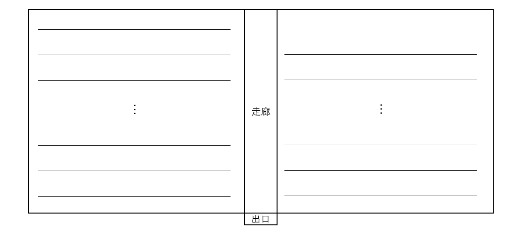

猿辅导 秋招 2023.09.17 编程题目与题解
1、书籍分类
有一位特别有责任心的老师，为了给学生带来高质量的课堂，翻阅了非常多的书籍，最后终于挑出了最有价值的几类书，并写了一个类目录，每个类用一个小写英文字母代表，比如m代表math。老师振臂高呼太棒啦，却一不小心把所有书籍散落在了地上，你能帮帮老师统计出每个类下有多少书籍吗？
举例，老师统计的目录为[a,b,m]。散落在地上的书籍为a,a,m,m,b,d,d,x。则你应该统计的结果：a 2,b 1,m 2。
输入
第一行输入一个字符串，代表类目录，其中类目录的长度\(\text{catalogueLen} (3 \le \text{catalogueLen} \le 53)\)
第二行输入一个字符串，代表地上散落的书籍，其中书籍的长度\(\text{bookLen} (3 \le \text{bookLen} \le 10^5)\)
保证不会出现类目录重复的情况，如[a,a,b]。
输出
输出可能有多行，每行两个，第一个代表种类，第二个代表此种类下有多少本书。
最后按种类进行字典序排序。
样例
1 | 输入： |
解答
直接使用Python中的Counter计算出每类数的数量，然后对类目录进行排序，分别输出每类书的数量即可。
代码
1 | from collections import Counter |
2、有序下课最短时间
教室中间有一条走廊，出口如图，在走廊两旁有几排座位，同学们随意坐在不同的座位上，假设每个单位时间学生们可以移动距离为\(1\)，且同一时间同一个位置只能有一个同学。所有同学的下课出教室路径都是从座位先移动到走廊，然后走到门口即可。假设走廊是\(y\)轴，出口是\((0,0)\)。

输入
输入\(n\)代表学生数。\((1 \le n \le 10000)\)
后面\(n\)行输入，每行两个数字，表示学生标\((x_i,y_i),(-10000\le x\le 10000,x\neq 0) (0\le y\le 10000)\)
输出
输出最短时间\(t\)。
样例
1 | 输入： |
解答
对于第\(i\)个学生，他到达出口所需要花费的最短时间为\(t_i=|x_i|+y_i\)。
因此，如果有多个学生花费的最短时间都是同一个值，那么他们必定会“挤在一起”。也就是说，假设现在有\(c\)个学生到达出口的最短时间为\(t\)，那么不考虑前面积压下来的学生，这些学生的离开出口时间为\(t,t+1,t+2,\dots,t+c-1\)。
最终我们对\(t_i\)进行排序。假设已经满足\(t_1\le t_2\le \dots\le t_n\)，那么对于其真实出门时间，必定有\(t_1'=t_1,\forall i\in [2,n]\)，都有\(t'_{i}>t'_{i-1}\)，并且\(t'_i\ge t_i\)。因此只需要令\(t_i'=\max\{t_{i-1}'+1,t_i\}\)即可。
最终\(t_n'\)的值为答案。
代码
1 | n = int(input()) |
3、消除棋子
有一个树形的棋盘，棋盘上有\(n\)个结点，由\(n-1\)条边连接起来，每个结点摆放有黑色或者白色的棋子。玩家可以选择棋盘上任意两个不同的结点\(x,y\)，如果从\(x\)出发到达\(y\)的最短路径上任意两个相的结点都有不同的颜色，那么玩家就能够将路径上的棋子全部消除掉(包括\(x,y\))。消除掉的节点越多，玩家获得的奖品将越丰厚。为了能消除更多的棋子，允许玩家最多能改变\(k\)个棋子的颜色。现在玩家只有一次消除棋子的机会，请问最多能消除掉多少个棋子。
输入
第一行输入两个整数\(n,k\)，其中\(1\le n\le 2\ast10^4,0\le k\le 10\)。
第二行输入\(n\)个整数，其中第\(i\)个整数代表编号为的结点上棋子的颜色（\(0\)代表白色，\(1\)代表黑色），结点编号从\(1\)到\(n\)。接下来\(n-1\)行，每行两个整数\(x,y\)，表示结点\(x,y\)相连（无向边），其中\(1\le x,y\le n\)。
对于\(30\%\)的数据，有\(1\le n\le 10^3\)；
对于\(100\%\)的数据，有\(1\le n\le 2\cdot10^4\)。
输出
输出一个整数代表最多能消除的棋子数。
样例
1 | 输入： |
解答
这题明显是一道树形动态规划的题目。假设节点\(i\)一开始的颜色为\(c_i(c_i\in\{0,1\})\)。我们首先将整棵树定根，其跟节点为\(1\)，我们可以定义状态\(f(u,i,j)(1\le u\le n,0\le i\le 1,0\le j\le k)\)表示如下状态：以\(u\)为根的子树中，根节点被染成颜色\(i\)时，最多修改\(j\)次节点颜色后，从根节点向下最长的黑白相间的路径长度是多少？令\(\text{son(u)}\)表示节点\(u\)的所有子节点，那么\(\forall v\in\text{son}(u), i\in\{0,1\},j\in[0,k]\)，状态可以如下自底向上地转移：
- \(f(v,1-c_u,j)+1\rightarrow f(u,c_u,j)\)
- \(f(v,c_u,j)+1\rightarrow f(u,1-c_u,j+1)\quad\text{if}\quad j<k\)
其中，第一个转移表示节点\(u\)不需要被修改颜色，并且加上根节点\(u\)后，最长路径长度增加了\(1\)。第二个转移表示节点\(u\)需要被修改颜色，并且加上根节点\(u\)后，最长路径长度增加了\(1\)。需要注意的是，如果修改次数超过了\(k\)，那么就不进行转移。
此外，还有如下转移，这些转移表示根节点自身也成一条路径：
- \(1\rightarrow f(u,c_u,0)\)
- \(1\rightarrow f(u,c_u,0)\)
接下来我们求解最长满足的路径长度。具体步骤如下：当我们计算\(u\)的一个儿子\(v\)的所有\(f(v,\cdot,\cdot)\)的值后，先不要立刻将它转移到\(f(u,\cdot,\cdot)\)中，因为现在\(f(u,\cdot,\cdot)\)只包含了已经被遍历过的所有子节点的状态。此时我们可以直接统计\(\displaystyle{\max_{0\le i+j\le 10,0\le c\le 1}\{f(u,c,i)+f(v,1-c,j)\}}\)到答案中，因为状态\(f(u,\cdot,\cdot)\)目前仍然和\(f(v,\cdot,\cdot)\)仍然是没有交集的，只要将当前\(f(u,c,i)\)和\(f(v,1-c,j)\)中的所有路径拼接起来就可以得到答案。统计完答案后，再将\(f(v,\cdot,\cdot)\)转移到\(f(u,\cdot,\cdot)\)即可。这时我们能够得到最优解。
代码
1 |
|